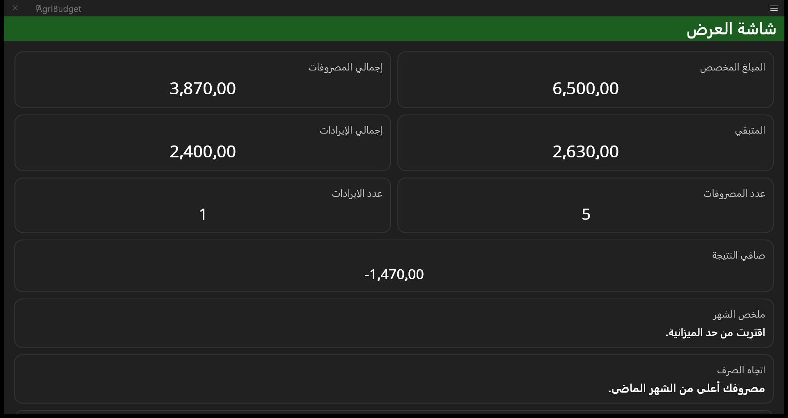
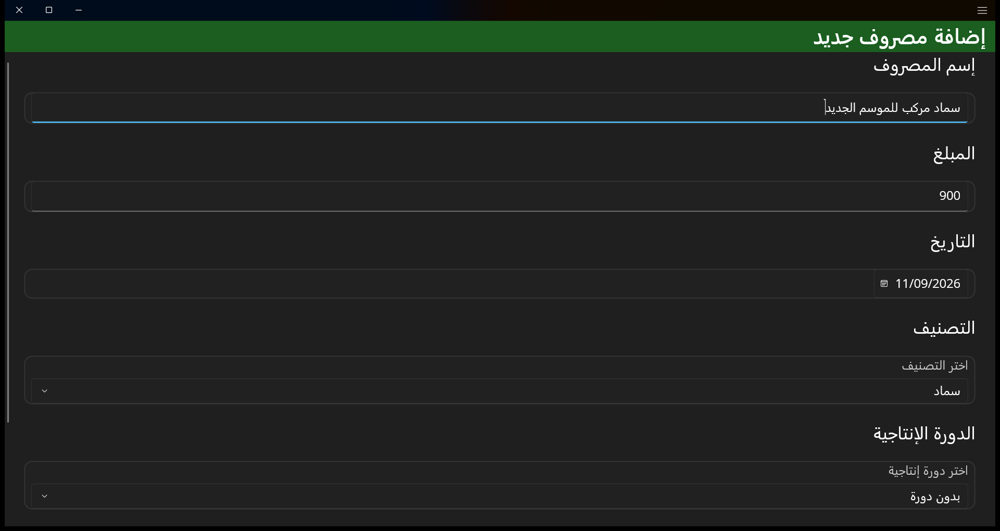
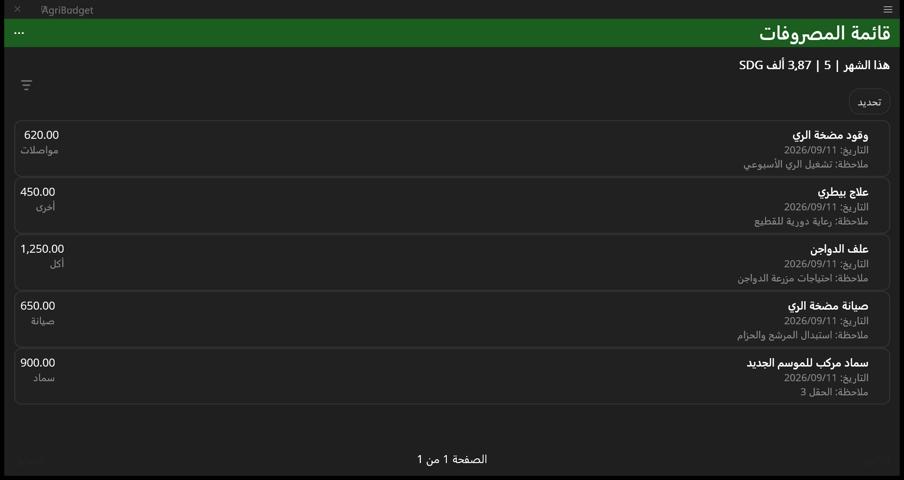
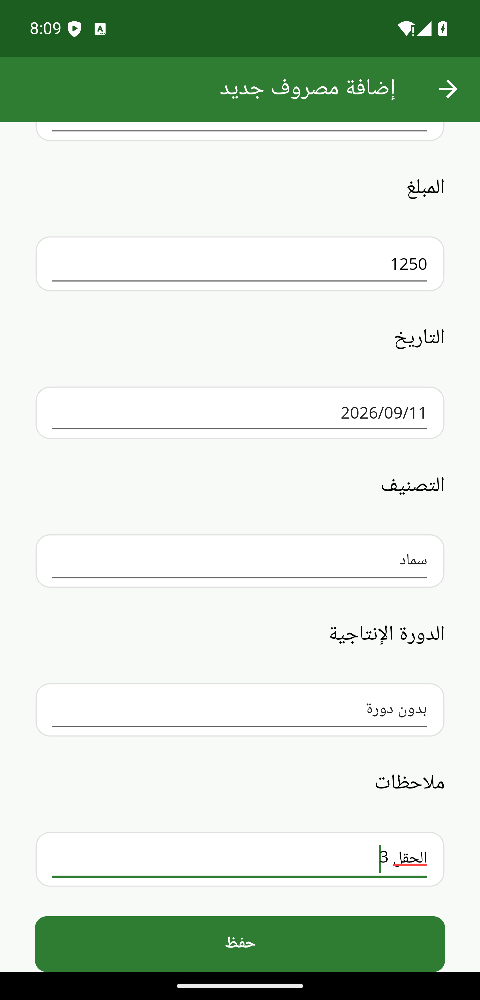

Before installing on Android
- This is a direct download, not a store release.
- Android may ask you to allow installation from this source.
- On devices with 16 KB memory pages, the app uses Android's official compatibility mode.
Version 1.0
AgriBudget runs locally on Android and Windows. It helps users record expenses and income, categorize expenses, review reports, track spending against a simple monthly budget, and organize records by production cycle.
Download version 1.0
Download the official AgriBudget 1.0 package for Android or Windows, then review the brief setup notes below.
Data stays local and separate on each device; there is no synchronization between phone and computer. The checksum file is provided for anyone who wants to confirm that a download has not changed or become corrupted.
Problem and Solution
Expenses for labor, fuel, fertilizer, and purchases, along with income, can be scattered across papers and handwritten notes, making them difficult to find and review.
AgriBudget brings expenses and income into an organized set of searchable, editable records. It uses those records to generate reports, summarize operating profit or loss, and provide a financial summary for each production cycle, making it easier to track spending and review activity day to day on the same device.
A clearly defined scope
The current version covers daily recordkeeping, basic analysis, and local data management, with clearly stated functional limits.
Product value and implementation
AgriBudget 1.0 combines reporting, spending tracking through a simple monthly budget with five predefined budget items, and records organized by production cycle. It also supports exporting active expense and income records, creating a backup copy of the app's database, and restoring the database from a user-selected backup file.
The implementation supports Android and Windows and uses a local SQLite database. It handles right-to-left and left-to-right layouts and accommodates long numeric values. The completed portfolio project is version 1.0.
Desktop interface
These three screenshots show key screens from the Arabic desktop interface. The displayed values are sample data used for demonstration.



Mobile interface
The Android version shows a clear Arabic form for adding an expense, with fields for the amount, date, category, production cycle, and notes, suited to daily entry while working.

Final status
AgriBudget 1.0 is complete as a portfolio project. It provides a practical way to record and review expenses and income through reports, a simple monthly budget, and production cycles. It also supports exporting active expense and income records, creating a backup copy of the app's database, and restoring the database from a user-selected backup file.
Project creator
A brief introduction to the experience behind the project.
MOHAFIZE
Agricultural Finance & Operations Professional | Building Practical Software Tools
Creator of AgriBudget
I am an agricultural finance and operations professional. I build practical software tools inspired by my experience in banking, agricultural finance, recordkeeping, collections, and field coordination.
Location Riyadh, Saudi Arabia